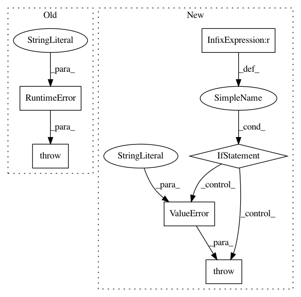

0e22219cfa3b5b8c4af77a452812f03cc3a13a06,scipy/optimize/least_squares.py,,least_squares,#Any#Any#Any#Any#Any#Any#Any#Any#Any#Any#Any#Any#Any#Any#Any#Any#Any#,142
Before Change
J0 = jac_wrapped(x0, f0)
if len(J0.shape) != 2:
raise RuntimeError("`jac` must return at most 2-d array_like, "
"sparse matrix or LinearOperator.")
if J0.shape != (m, n):
raise RuntimeError("The return value of `jac` has wrong shape.")
After Change
jac_wrapped = None
else:
if jac_sparsity is not None and tr_solver == "exact":
raise ValueError("Usage of tr_solver="exact" with "
"`jac_sparsity` provided is forbidden.")
jac_sparsity = check_jac_sparsity(jac_sparsity, m, n)
def jac_wrapped(x, f):
J = approx_derivative(fun, x, rel_step=diff_step, method=jac,
In pattern: SUPERPATTERN
Frequency: 3
Non-data size: 6
Instances
Project Name: scipy/scipy
Commit Name: 0e22219cfa3b5b8c4af77a452812f03cc3a13a06
Time: 2015-07-28
Author: n59_ru@hotmail.com
File Name: scipy/optimize/least_squares.py
Class Name:
Method Name: least_squares
Project Name: bokeh/bokeh
Commit Name: 6d7069d9a13c2e15b7c7fd67a092cf9738f00347
Time: 2015-10-23
Author: hp@pobox.com
File Name: bokeh/embed.py
Class Name:
Method Name: autoload_static
Project Name: cornellius-gp/gpytorch
Commit Name: 2185f24dda7b33194d4240b2a6301230ce1cd7f5
Time: 2019-04-02
Author: jake.gardner@uber.com
File Name: gpytorch/likelihoods/multitask_gaussian_likelihood.py
Class Name: MultitaskGaussianLikelihoodKronecker
Method Name: __init__